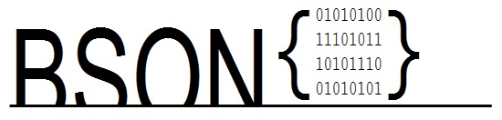

Ruby BSON Performance

setint32
setint32 method for BSON sizes during serialization
also includes the following other optimizations
- native
- setint32
- Integer#to_bson_int32 append
- Integer#to_bson_int64 append
- Integer#to_bson_time append
- Integer#to_bson test order - test bson_int32? first as most numbers fit
Combinations of
- drivers (mongo-ruby-driver, mongo-meta-driver)
- extensions (pure ruby, bson_c, bson_java, meta native)
- rubies (Ruby 2.0.0, JRuby 1.7.3)
Encode
Decode
Generated